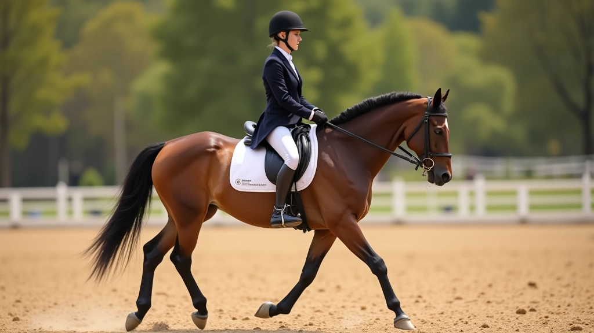
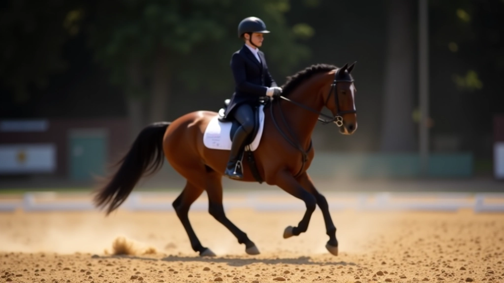
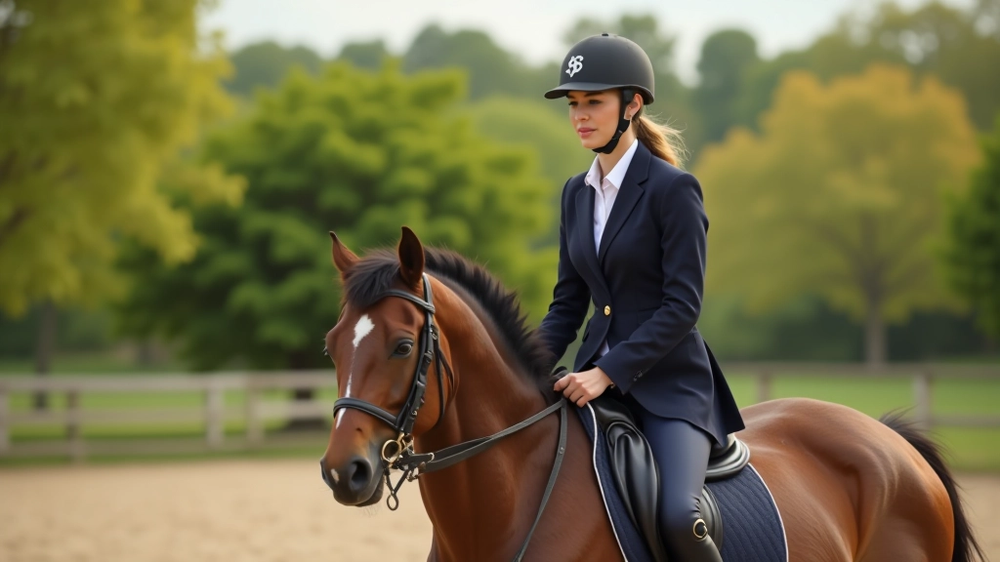
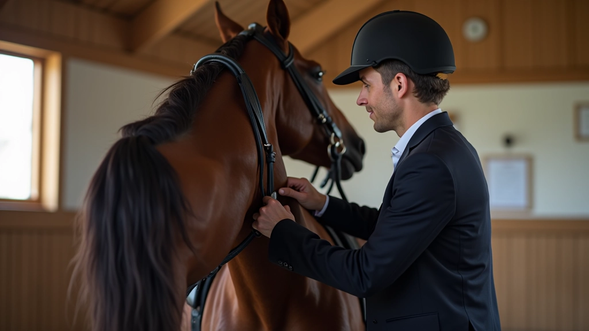
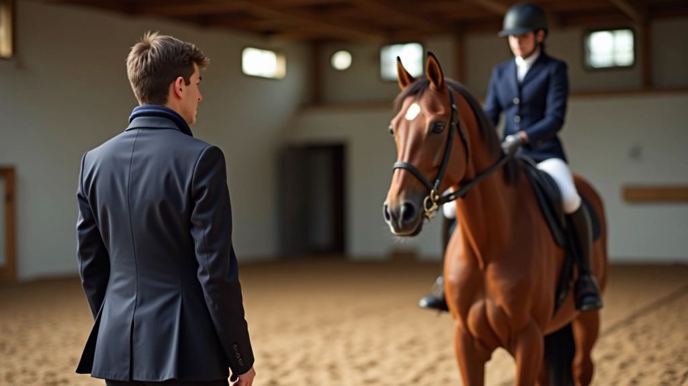

أساسيات انتقال المشي: البداية الصحيحة
يشرح هذا الدليل خطوات البدء الصحيحة لتعليم حصانك انتقالات المشي الأساسية مع التركيز على بناء أساس قوي.
تعرّف على المشاكل الشائعة التي يواجهها المتدربون وكيفية تصحيحها لتحسين جودة انتقالاتك بسرعة

فريق المحتوى التحريري
كتبه فريق إسطبل النيل التحريري، المتخصص في تقديم إرشادات عملية وموثوقة عن تدريب الخيل والترويض.
الانتقالات السلسة والدقيقة هي أساس الترويض الجيد. لكن في الواقع، معظم المتدربين يواجهون مشاكل متشابهة عند محاولة تحسينها. الخبر السار؟ هذه المشاكل يمكن تصحيحها بسهولة عندما تعرف ما تبحث عنه.
نحن لاحظنا على مدار سنوات التدريب أن الأخطاء الشائعة تتكرر بنفس النمط. قد يكون الحصان متوتراً، أو المتدرب لا يستخدم الإشارات الصحيحة، أو ببساطة لم يتم بناء الأساس بشكل صحيح. في هذا الدليل، سنوضح لك الأخطاء الخمسة الأكثر شيوعاً وكيفية تصحيحها.

يحتاج الحصان إلى مشي ثابت قبل محاولة أي انتقال. كثير من المتدربين يركزون على الانتقال نفسه ولا ينتبهون لجودة المشي الذي يسبقه. المشي الجيد يعني خطوات منتظمة، تقدم ثابت، وحصان يستجيب للإشارات.
كيفية التصحيح؟ اقضِ وقتاً في بناء مشي قوي قبل محاولة الانتقال. امش في خطوط مستقيمة، ثم في دوائر بأحجام مختلفة. استهدف المشي لمدة 5-10 دقائق في كل جلسة تدريب. عندما يصبح المشي مستقراً تماماً، ستجد أن الانتقالات تصبح أسهل كثيراً.


الحصان لا يعرف أنك تريد انتقالاً إذا لم تعطه إشارات واضحة. البعض يحاول الانتقال من خلال سحب العنان أو الضغط بالساقين بطريقة غير منظمة. هذا يربك الحصان ولا يؤدي إلا إلى توتر وحركات غير منضبطة.
الإشارات الجيدة تأتي من توازن جسدك أولاً. ثم الساقين (الضغط الخفيف)، ثم اليدين (التثبيت البسيط). يجب أن تكون كل إشارة واضحة ولا يشوبها التردد. لا تحتاج إلى قوة كبيرة – بل إلى وضوح وتناسق.
حصان متوتر لن ينفذ انتقالاً جيداً أبداً. إذا كان الحصان خائفاً أو متجمداً، فإن عضلاته ستكون صلبة وحركاته ستكون قاسية. يحدث هذا غالباً عندما يكون المتدرب نفسه متوتراً أو يفرض الانتقال بقوة.
الحل يبدأ بك. يشعر الحصان بتوترك. اعمل على الاسترخاء أولاً – تنفس بعمق، استرخ كتفيك، دع الحصان يشعر بثقتك. ثم جرب الانتقال بنعومة وتدرج. قد يستغرق الأمر عدة محاولات، لكن الصبر يؤتي ثماره دائماً.

المعلومات الموجودة في هذا الدليل مقدمة لأغراض تعليمية وإرشادية فقط. كل حصان فريد والمتطلبات قد تختلف. يُنصح بشدة استشارة مدرب متخصص قبل تطبيق أي تقنيات جديدة. الأمان والرفاهية يجب أن يكونا أولويتك دائماً.

الانتقالات تحتاج وقتاً. لا تتوقع من حصان أن يتعلم انتقالاً مثالياً في أسبوع أو حتى شهر. التدريب المنتظم والصبور هو المفتاح. بعض الخيول تتعلم بسرعة، والبعض الآخر يحتاج وقتاً أطول.
خطط لجلسات تدريب منتظمة 3-4 مرات أسبوعياً. في كل جلسة، اعمل على الانتقال لمدة 10-15 دقيقة فقط. لا تصر على الكمال. تقدم صغير ثابت أفضل من محاولات عشوائية. احتفل بالتحسنات الصغيرة وستجد أن الحصان يتحسن تدريجياً.
لا تتقدم إلى مرحلة جديدة قبل إتقان الحالية. كثيراً ما نرى متدربين يريدون الانتقال من الانتقال البسيط إلى تقنيات متقدمة قبل الأوان. هذا يؤدي إلى مشاكل أساسية لم تُحل بعد.
قيّم تقدم حصانك بصراحة. هل الانتقال من المشي إلى التوقف سلس وسريع؟ هل يستجيب الحصان بدون توتر؟ هل يحافظ على التوازن؟ عندما تجيب بنعم على كل هذه الأسئلة، عندها يمكنك الانتقال إلى التقنيات الأكثر تقدماً. لا تتسرع في العملية.

تصحيح الأخطاء في الانتقالات ليس معقداً كما قد يبدو. المفتاح هو فهم المشكلة الأساسية، ثم العمل بنظام وصبر. ابدأ بتقييم حالتك الحالية. أي من هذه الأخطاء الخمسة ينطبق عليك؟ اختر واحداً وركز عليه في الأسابيع القادمة.
تذكر أن كل حصان مختلف والتقدم يحدث بخطوات صغيرة. لا تقارن نفسك بمتدربين آخرين. ركز على تحسينك أنت وحصانك. مع الممارسة المنتظمة والإرشاد الجيد، ستلاحظ تحسناً حقيقياً في غضون 4-6 أسابيع. ابدأ اليوم، وسترى النتائج غداً.
اقرأ المزيد من أدلتنا التفصيلية
يشرح هذا الدليل خطوات البدء الصحيحة لتعليم حصانك انتقالات المشي الأساسية مع التركيز على بناء أساس قوي.

تقنيات متقدمة لتعليم حصانك التوقف المثالي مع الحفاظ على الانتباه والاستجابة للإشارات.

خطة تدريب منظمة تغطي جميع مراحل التطور من التوقف البسيط إلى الانتقالات المتقدمة.